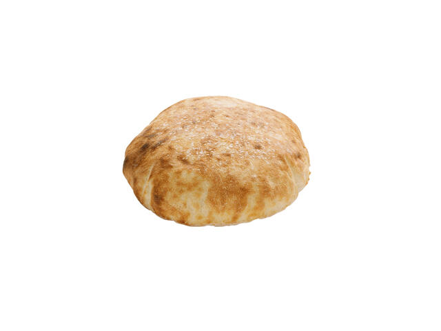

Lipie

The Dish
Lipie is a crusty bread common in Romanian cuisine
The common way to make it is simple:
- The dough is prepped then stored in the fridge for an hour
- It is subsequently cooked at 300 degrees celsius until light, puffy, and golden
- Lastly, it is topped with salt, oregano, and olive oil
Ingredients
- 500g flour
- 300ml water
- 1 teaspoon salt
- 1 teaspoon dry yeast
- Olive oil
- Oregano
- Salt
Assembly
- In a bowl, mix the flour, salt, and dry yeast.
- Gradually add the water and knead until a smooth dough forms.
Cover the dough with a cloth and let it rest for about 1 hour in the fridge.
- Preheat the oven to 300°C (572°F).
- Divide the dough into small balls and roll them out into flat circles.
Place the rolled dough on a baking sheet lined with parchment paper.
- Bake in the preheated oven for about 10-15 minutes, or until the lipie is golden and puffed up.
- Reomve from the oven and brush the top with olive oil and sprinkle with salt and oregano.
- Let it cool slightly before serving.
Back to Homepage